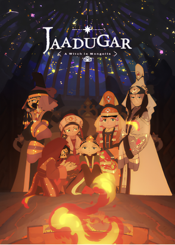
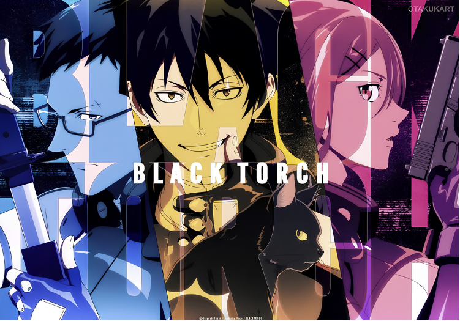

Mùa anime hè 2026 khép lại với nhiều tác phẩm gây chú ý nhờ cách xử lý những tập cuối. Từ câu chuyện lịch sử, hành động siêu nhiên đến đời thường và fantasy, mỗi anime lựa chọn một cách riêng để khép lại mùa phát sóng và mở ra những hướng phát triển mới.
Khi tập cuối không chỉ là dấu chấm hết
Một mùa anime có thể thu hút khán giả bằng những tập mở màn ấn tượng, nhưng chặng cuối mới là lúc chất lượng của cách kể chuyện được thể hiện rõ nhất. Với các tác phẩm chuyển thể từ manga, tập cuối còn phải giải quyết bài toán lựa chọn điểm dừng phù hợp, tránh kết thúc quá vội nhưng cũng không làm mất đi dư âm của câu chuyện.
Mùa hè 2026 chứng kiến nhiều anime đi đến những tập cuối với cách xử lý khác nhau. Có tác phẩm khép lại một cuộc đối đầu, có bộ phim chỉ đơn giản duy trì nhịp kể quen thuộc, trong khi một số khác chủ động để lại nhiều câu hỏi cho phần tiếp theo.
Dưới đây là 5 anime đáng chú ý ở chặng kết của mùa hè 2026.
1. Jaadugar: A Witch in Mongolia: Cuộc đấu trí chưa đi đến hồi kết
Jaadugar: A Witch in Mongolia là anime chính kịch lịch sử do Science SARU sản xuất, chuyển thể từ manga của Tomato Soup.
Câu chuyện lấy bối cảnh thế kỷ XIII, xoay quanh Sitara, một cô gái phải thích nghi với cuộc sống dưới sự cai trị của đế chế Mông Cổ. Khác với nhiều anime lịch sử tập trung vào chiến tranh, tác phẩm chú trọng vào tri thức, chính trị và những cuộc đấu trí giữa các nhân vật.
Sau khi trở thành tù nhân của quân Mông Cổ, Sitara dần bước vào thế giới quyền lực phức tạp của đế chế. Mối quan hệ giữa cô và Toregene cũng trở thành một trong những tuyến truyện quan trọng.
Ở chặng cuối, những biến động chính trị tiếp tục đẩy các nhân vật vào những lựa chọn khó khăn. Tập cuối không giải quyết toàn bộ xung đột mà đặt nền móng cho những diễn biến tiếp theo.

Cách kết thúc này phù hợp với một câu chuyện có quy mô lớn, khi hành trình của nhân vật chính vẫn còn nhiều khoảng trống để phát triển.
2. Black Torch: 12 tập khép lại một câu chuyện shonen ngắn gọn
Black Torch mang nhiều đặc trưng của dòng shonen với những trận chiến siêu nhiên, nhân vật trẻ tuổi và các thế lực đối đầu.
Nhân vật chính Jiro Azuma là một thiếu niên xuất thân từ dòng dõi ninja. Cuộc sống của Jiro thay đổi sau khi cậu gặp Rago, một mononoke tồn tại dưới hình dạng mèo đen.
Từ cuộc gặp này, Jiro bị cuốn vào cuộc chiến giữa con người và các thực thể siêu nhiên. Cậu đồng thời phải tìm hiểu thêm về năng lực của bản thân và những bí mật liên quan đến Rago.
Với 12 tập, anime đưa câu chuyện đến cuộc đối đầu quan trọng giữa Jiro, Rago và Tenki. Đây cũng là điểm nút giúp mùa phim hoàn thành phần cốt truyện chính mà không cần kéo dài quá mức.

Nguyên tác Black Torch chỉ gồm 5 tập manga, tương đương 19 chương. Vì vậy, anime có lợi thế khi sở hữu một nguồn nguyên liệu tương đối cô đọng, giúp câu chuyện dễ dàng đi đến một điểm dừng rõ ràng.
3. Smoking Behind the Supermarket With You: Chuyện tình nhẹ nhàng khép lại mùa phim
Không có những trận chiến lớn hay thế giới siêu nhiên, Smoking Behind the Supermarket With You tập trung vào những cuộc gặp gỡ rất đời thường.
Nhân vật trung tâm là Sasaki, một nhân viên văn phòng trung niên thường xuyên chịu áp lực từ công việc. Sau giờ làm, ông tìm thấy một khoảng thời gian thư giãn khi ghé khu vực phía sau siêu thị.
Tại đây, Sasaki gặp Tayama, một cô gái có tính cách khác biệt với Yamada - nữ nhân viên siêu thị mà ông thường trò chuyện. Điều đặc biệt là Sasaki không nhận ra hai người thực chất là cùng một người.
Từ những cuộc trò chuyện ngắn, mối quan hệ giữa các nhân vật dần phát triển. Anime không đặt nặng những biến cố lớn mà khai thác cảm giác cô đơn, áp lực công việc và nhu cầu tìm kiếm một người có thể lắng nghe mình.
Ở những tập cuối, tác phẩm tiếp tục duy trì cách kể chậm rãi thay vì tạo ra một cao trào tình cảm quá lớn. Đây cũng là điểm giúp bộ phim giữ được màu sắc riêng giữa mùa anime có nhiều tác phẩm hành động và fantasy.
4. Chainsmoker Cat: Hài hước từ những vấn đề rất đời thường
Chainsmoker Cat, còn được biết đến với tên Yani Neko, là một trong những anime có phong cách khác biệt của mùa hè 2026.
Tác phẩm xây dựng thế giới nơi những nhân vật nửa người nửa mèo cùng tồn tại và phải đối mặt với các vấn đề quen thuộc như công việc, tiền bạc, các mối quan hệ và những thói quen khó thay đổi.
Nhân vật trung tâm Yani Neko không phải kiểu nhân vật hoàn hảo. Những điểm yếu, thói quen xấu và các lựa chọn thiếu lý trí của nhân vật trở thành nguồn tạo nên nhiều tình huống hài trong phim.
Đến tập cuối, anime không tìm cách biến mọi vấn đề thành một kết thúc hoàn hảo. Các nhân vật vẫn phải tiếp tục đối diện với những rắc rối thường ngày, giữ nguyên tinh thần hài hước và châm biếm nhẹ nhàng xuyên suốt toàn bộ mùa phát sóng.